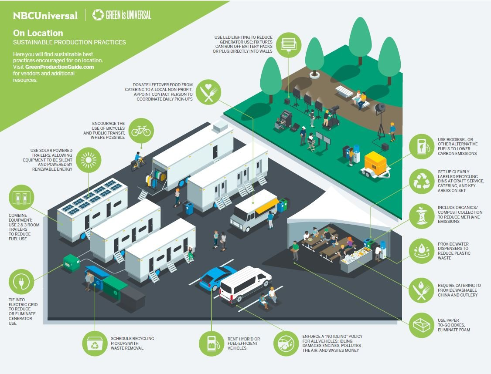

Início
Bem-vindo ao Eco Notícias Sustentáveis!
Aqui, você encontra as últimas notícias sobre sustentabilidade, meio ambiente e inovação ecológica, com
atualizações em tempo real. Nosso compromisso é trazer conteúdos relevantes que conectam os desafios
globais com as soluções possíveis para um futuro mais verde e equilibrado. A cada dia, compartilhamos
informações sobre políticas climáticas, tecnologias sustentáveis, iniciativas de preservação e muito
mais.
Nosso objetivo é inspirar a ação e promover a conscientização, fornecendo análises e notícias que
ajudem você a entender como cada escolha e decisão no mundo pode impactar o nosso planeta. Seja você um
ambientalista, um curioso ou alguém que busca se manter informado sobre as questões ecológicas, o Eco
Notícias Sustentáveis é o seu espaço para se atualizar e se engajar.
Junte-se a nós na jornada rumo a um mundo mais sustentável!
Política e Sustentabilidade
Escrito em 4 de novembro de 2024
Harris ou Trump? O impacto das eleições nos EUA para o clima global
A disputa acirrada entre Kamala Harris e Donald Trump não é apenas uma questão política, mas também pode ter um impacto significativo nas políticas climáticas globais. Em um momento crucial para o futuro do planeta, as escolhas dos eleitores dos EUA podem influenciar diretamente as ações de mitigação das mudanças climáticas. Saiba como a eleição de 2024 pode afetar a agenda ambiental mundial.
Leia mais em Notícia Sustentável!Tecnologia e Sustentabilidade
Inovação nas Energias Renováveis com Inteligência Artificial
Escrito em 2 de novembro de 2024
Recentemente, cientistas e engenheiros desenvolveram um novo sistema de inteligência artificial (IA) capaz de otimizar a eficiência de painéis solares e turbinas eólicas. A tecnologia, que utiliza algoritmos avançados, analisa em tempo real as condições climáticas e de operação de parques eólicos e solares, ajustando automaticamente os sistemas para maximizar a produção de energia renovável. Essa inovação pode reduzir significativamente os custos operacionais e aumentar a capacidade de geração de energia limpa, ajudando a acelerar a transição para fontes de energia sustentáveis. Especialistas apontam que, à medida que a IA for aprimorada, ela poderá ser crucial para a integração das energias renováveis nas redes elétricas globais, tornando-as mais eficientes e confiáveis.
Entretenimento e Sustentabilidade
Cinema Adota Práticas Ecológicas em Produções
Escrito em 1 de novembro de 2024
A indústria cinematográfica tem dado passos importantes para se tornar mais sustentável, com várias produções adotando práticas ecológicas para reduzir seu impacto ambiental. Recentemente, um estúdio de Hollywood anunciou que irá utilizar energia 100% renovável em sua próxima grande produção, além de implementar estratégias de zero desperdício no set de filmagem. Isso inclui a utilização de materiais recicláveis, redução de plásticos de uso único e o incentivo ao transporte sustentável para a equipe e elenco. Além disso, o filme está explorando temas ambientais, trazendo à tona questões sobre mudanças climáticas e conservação da natureza, com a esperança de sensibilizar o público sobre a importância da sustentabilidade. A iniciativa é um reflexo crescente da conscientização no setor do entretenimento, que está cada vez mais alinhado com as metas globais de sustentabilidade.
